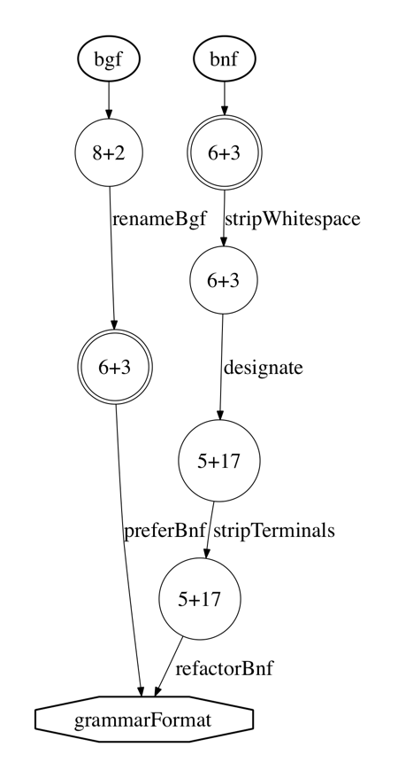

BGF transformation operator suite
v.1.0
2010-02-15
Foreword
This chapter describes the transformational suite for BGF and all the details about it.
Most of the information present here is located in the XML Schema definition of the
language, part of the SLPS project. The rest was introduced by the language documentation
transformation commands in the process of automated generation of the manual in its
present form.
Normative references
Table of contents
- Foreword
- Normative references
- Design goals
- Notation
- Folding and unfolding transformations
- unfold
- fold
- inline
- extract
- abridge
- detour
- unchain
- chain
- Other refactoring transformations
- massage
- distribute
- factor
- deyaccify
- yaccify
- eliminate
- introduce
- import
- vertical
- horizontal
- rassoc
- lassoc
- equate
- Grammar lengthening transformations
- add
- appear
- widen
- upgrade
- unite
- Grammar shortening transformations
- remove
- disappear
- narrow
- downgrade
- Refactorings in term-oriented semantics
- abstractize
- concretize
- permute
- Semantics revising transformations
- define
- undefine
- redefine
- inject
- project
- replace
- Decorative transformations
- designate
- unlabel
- deanonymize
- anonymize
- dump
- rename
- renameL
- renameN
- renameS
- renameT
- reroot
- Compatibility
Design goals
XBGF operator suite was developed mainly for grammar convergence
activities.
- Grammar recovery.
In order to recover a working grammar from a real grammar artifact one needs
to perform various activities such as grammar extraction, grammar beautification,
deyaccification, error fixing, etc,—all of them are present in XBGF.
- Grammar convergence.
An infrastructure for grammar convergence (see Chapter 4) contains three
essential parts: grammar extractors, a grammar comparator and a grammar transformer.
The latter component is needed for changing the source grammars so that
they become structurally identical at the convergence point.
XBGF suite can be used as a framework for programmable grammar transformations,
it provides all the required expressive power.
- Language documentation.
It is possible and quite expected that the grammar that is shown in the language
standard, programmer's manual or any similar document is not exactly the same
as the one used for creating a compiler. For instance, Java Language Specification
includes two grammars, each one created and maintained manually and separately.
A transformation suite can be useful in such a case since it helps to generate
one of the versions (perhaps the more reader-friendly one) from the other automatically,
both making their relationship more explicit and reducing maintenance effort and
increasing reliability.
- Language evolution.
A language rarely stays as it was developed on its first day. If any language is being
used in practice for some time, new constructs are added to it to respond to the needs
of the end users (programmers). XBGF suite has multiple operators for expressing
language extensions and revisions, they can be used to document the changes between
versions and dialects of the language.
- Language design.
DSL design is not a rare activity nowadays, and it is quite common to develop
the language gradually, regularly synchronising with the needs and knowledge
of domain experts. XBGF suite allows to document these steps as transformation
steps departing from the base-line grammar or even an empty grammar and finally
reaching the language ready to be deployed.
- Disciplined grammar adaptation.
In order to adapt the baseline grammar to the working circumstances one needs it
to work in, it is useful to have a good support for grammar transformations.
XBGF can be used to converge differently adapted grammars or as a standalone tool
for applying grammar adaptation steps.
Notation
BGF is a BNF-like Grammar Format, an XML dialect of Extended Backus Naur Form
that was used in the language convergence infrastructure.
Its abstract syntax grammar is automatically extracted from the corresponding
XML Schema and presented below:
grammar:
root::nonterminal* production*
production:
label::label? nonterminal::nonterminal expression
expression:
epsilon::ε
empty::ε
value::value
any::ε
terminal::terminal
nonterminal::nonterminal
selectable::(selector::selector expression)
sequence::(expression+)
marked::expression
choice::(expression+)
optional::expression
plus::expression
star::expression
value:
int::ε
string::ε
label:
string
nonterminal:
string
selector:
string
terminal:
string
All BGF and XBGF listings are presented in a unified pretty-printed way.
The concrete syntax for it is presented below:
grammar:
production+
label:
"[" string "]"
production:
label::label? nonterminal::string ":" right-hand-side
right-hand-side:
NEWLINE (INDENT symbol+ NEWLINE)+ NEWLINE
symbol:
"EPSILON"
"EMPTY"
"ANY"
"STRING"
"INT"
terminal::(""" string """)
nonterminal::string
selectable::(selector::string "::" symbol)
sequence::("(" symbol+ ")")
choice::("(" (symbol ("|" symbol)*) ")")
optional::(symbol "?")
plus::(symbol "+")
star::(symbol "*")
marked::("<" symbol ">")
Any XBGF command is pretty-printed as the name of the transformation
and all the parameters (productions, expressions, etc) in brackets,
followed by a semicolon.
List of definitions
- Grammar
-
A set of interdependent productions.
grammar:
production*
- Sequence
-
Sequential composition of multiple transformations.
sequence:
(transformation | atomic)*
- Atomic
-
Multiple transformations that must be for some reason perceived as one step.
atomic:
transformation+
- Transformation
-
A list of all the XBGF transformations is grouped in seven categories:
folding-unfolding-transformation collects those commands
that perform the well-known folding/unfolding operations in slightly varied
circumstances; refactoring-transformation contains
transformations that perform factoring and reorganising procedures that
do not alter the language generated by the grammar; increasing-transformation
increase the semantics of the language by adding new options and alternatives to it;
decreasing-transformation similarly decrease the semantics;
concrete-revising-transformation are refactorings if we use term-oriented
semantics (abstract syntax) but they are neither semantic preserving, increasing nor decreasing
transformations if we use string-oriented semantics (concrete syntax); transformations from
abstract-revising-transformation change the language
generated by the grammar in a way that they cannot be a priori classified as any of
the above; decorative-transformation are special refactorings
that are used to make or destroy labels and selectors in BGF.
transformation:
folding-unfolding-transformation
refactoring-transformation
increasing-transformation
decreasing-transformation
concrete-revising-transformation
abstract-revising-transformation
decorative-transformation
rename
reroot
dump
- Scope
-
Several transformation operators are possibly restricted to
a specific scope as opposed to their application to the full
input grammar. Two major forms of scope can be identified.
First, a production can be appointed by its label. Second, a
definition (nonterminal) can be appointed by its defined
nonterminal. Arguably, one may want to be able to appoint a
production even when it is not labeled, but a prior designate
transformation can then be used in order to attach a label
to the production in question.
[label] scope:
label
[nonterminal] scope:
nonterminal
- Marked
-
Some of the grammar transformations, namely
addH,
removeH,
appear,
disappear,
upgrade,
downgrade,
abstractize,
concretize,
inject,
project,
anonymize,
deanonymize,
accept only marked productions as their arguments.
marked-production:
production
When transformations need to happen very locally, the level of nonterminal
or production is insufficient and introduction of selectable sub-expressions is
too much extra effort. For this cases, XBGF uses markers that show at which
point exactly should the transformation take place. Markers are pretty-printed
as angle brackets.
Folding and unfolding transformations
Folding and unfolding activities are the most basic ones in grammar
transformation and the most used ones in grammar convergence. Since
grammar comparison is done in such a way that only applies very basic
algebraic laws in its endeavours to match the two grammars, many
more sophisticated manipulations need to be executed semi-automatically
in a programmable fashion. These manual steps help to establish a
stronger link between the convergence point and the original grammar
artifact since they aid to reveal some unapparent properties of those
grammars.
All these transformations are provably correct in the sense that
it is possible to prove that the languages generated by the grammars
before the transformation and after it are indeed the same. All
refactorings are easily reversible and introduced below in pairs.
folding-unfolding-transformation:
unfold
fold
inline
extract
abridge
detour
unchain
chain
unfold
The most basic unfolding transformation searches the scope for all the instances
of the given nonterminal usage and replaces such occurrences with the
defining expression of that nonterminal. By default the scope of the
transformation is the full grammar, but it can be limited to all the
definitions of one nonterminal or to one labelled production. Regardless
of the specified scope, unfolding is not applied to the definition
of the argument nonterminal.
Almost all the unfold transformations used in Java
Language Specification case study are restricted in scope by a nonterminal.
The reason for such statistics is that when the language engineer wants to
give up the nonterminal, he uses the inline
transformations. However, unfold usually
happens as a part of sequences with fold,
downgrade, disappear,
deyaccify, distribute,
etc.—in which case it is only natural to limit the impact of every step.
The definition that is being unfolded is assumed to be horisontal,
i.e. to consist of one single production. See the section on refactorings
for more information about horisontal and vertical definitions.
Syntax
unfold:
nonterminal in::scope?
Example
Given the input:
[l1] foo:
bar
[l2] qux:
bar
bar:
wez*
After using this transformation:
Will look like this:
[l1] foo:
wez*
[l2] qux:
wez*
bar:
wez*
fold
Folding replaces every expression that matches with the right hand
side of the given nonterminal's definition with the nonterminal
itself. As with unfold,
fold works on the scope of the grammar,
and its impact can be limited to one labelled production or to
all the productions belonging to one nonterminal. Regardless
of the specified scope, folding is not applied to the definition
of the argument nonterminal.
Since this transformation strives to preserve the language, it needs
a horisontal definition to work. When only one of several existing
definitions is used for folding, it would actually increase the semantics
of the language after transformation—the corresponding XBGF command
is called upgrade.
Syntax
fold:
nonterminal in::scope?
Example
Very much like unfolding, folding can take place locally. For instance,
[l1] foo:
wez*
[l2] qux:
wez*
bar:
wez*
After using this transformation:
Will look like this:
[l1] foo:
bar
[l2] qux:
wez*
bar:
wez*
inline
When this transformation is performed, an existing definition is eliminated by inlining.
This means that the argument nonterminal identifies the (horisontal) definition
that is to be unfolded and stripped away from the grammar.
The semantics of inline is that of a sequential composition of
unfold and eliminate.
Syntax
inline:
nonterminal
Semantics
The inline transformation is by far the
most used in Java Language Specification case study. One of the reasons
is what we call layering: in particular expressions and statements
are introduced in the
GjR
with a set of related nonterminals:
LabeledStatement, IfThenElseStatement, WhileStatement, ForStatement, etc, and
CastExpression, PreIncrementExpression, PreDecrementExpression, PostfixExpression, etc.
GjI
takes another approach, just listing all the alternatives in the productions
for Statement and Expression. In order to converge these two variants, a lot of inlining
transformations are needed. This can also be apparent from the statistics table,
that demonstrates that targets that converge only “readable” or only “implementable”
grammars, require less than ten inline transformations each, while each target that
takes both readable and implementable grammars in, contains 67–100 inline
transformations in convergence path.
Example
An example follows. When we have:
foo:
wez
bar:
wez ".." wez
wez:
qux*
After using this transformation:
It will look like this:
foo:
qux*
bar:
qux* ".." qux*
extract
A new definition is introduced by extraction. The argument provided for this
transformation
is a production that identifies both the fresh nonterminal to be introduced and the
expression that is used both as a pattern for folding and as a right hand side of
the added definition.
An optional scope can limit the application
of the folding part of the extraction transformation to a
specific production or a specific nonterminal.
If the nonterminal defined by the argument production is
already mentioned (i.e., defined or referenced) in the current
grammar, the transformation refuses to work and reports an
error. This usually signals an error in the language engineer's
logic because the existing traces of a possibly similar nonterminal
conflict with the definition that is being introduced.
Syntax
extract:
production in::scope?
Semantics
As seen from the experience gained from Java Language Specification case study,
it is highly unusual for extract to have limited scope. However, sometimes
a limited impact is desired in order to avoid excessive subsequent unfoldings
when the convergence requests for having several nonterminals with similar
definitions.
Example
Extraction also works vertically. Given the input:
TypeDeclaration:
ClassDeclaration
InterfaceDeclaration
";"
After performing this transformation step:
The result will be:
TypeDeclaration:
ClassOrInterfaceDeclaration
";"
ClassOrInterfaceDeclaration:
ClassDeclaration
InterfaceDeclaration
abridge
Given a reflexive chain production, i.e., a production whose
defined nonterminal equals its body, this production is simply
removed from the grammar, even if it contains some potentially
valuable information (like labels and selectors).
Syntax
abridge:
production
Semantics
Reflexive chain productions are rarely encountered explicitly in the base-line grammars,
but sometimes series of transformations result in them, and usually they are not needed.
An example of a transformation
sequence that yields a reflexive chain production can be a step from concrete syntax definition
to abstract syntax definition. Concrete syntax usually needs explicit bracketing constructions for
recursive composition, and after stripping away terminals and merging layers, these bracketing
constructions become reflexive chain productions. The Factorial Language case study has shown the need
for it.
Example
Consider this abstract syntax:
[constant] expr:
int
[neg] expr:
expr
[bracket] expr:
expr
After performing this transformation step:
The grammar will be the same, but without the reflexive chain production
labelled as “bracket” previously:
[constant] expr:
int
[neg] expr:
expr
detour
A reverse of abridge that can introduce
a reflexive chain production.
Syntax
detour:
production
Example
In the same way it was removed in the previous example,
the bracketing production can be added to the grammar.
The transformation that reverts the impact of the previous
abridge, looks like this:
unchain
Unchaining is a disciplined form of
inlining. The argument
production must occur in the input grammar, and it must be a chain
production, i.e., a production with a nonterminal as its
defining expression. The latter nonterminal is the one whose
definition is to be inlined; it must not have any occurrences
except in the chain production at hand.
The unchain transformation does not increase the expressivity
of the transformational language: technically, it is
nothing more than an inline with a precondition. However, this
particular precondition seems useful and not uncommon when dealing
with layered grammars.
Syntax
unchain:
production
Semantics
Chain productions are not commonly encountered in grammars of mainstream
programming languages. However, when converging grammars that hail from
different kinds of sources (i.e., different extraction processes) it can
be frequently needed to align grammars that use chain productions with
grammars that use labelled ones.
Example
Consider this grammar:
[constant] expr:
int
[binary] expr:
binexpr
binexpr:
expr op expr
After performing this transformation step:
The auxiliary nonterminal symbol is gone, as is the chain production:
[constant] expr:
int
[binary] expr:
expr op expr
chain
Just like unchain is a specific form of inline,
chaining is a disciplined form of
extraction. The argument
production will be part of the resulting grammar; it is a chain
production, i.e., a production with a nonterminal as its defining
expression. That nonterminal is the one whose definition is to be
extracted. That definition is the defining expression of the
production (from the input grammar) whose defined nonterminal and
label (if any) matches with the argument production.
Syntax
chain:
production
Example
In the same way it was removed in the previous example,
the chain production can be added to the grammar.
The transformation that reverts the impact of the previous
unchain, looks like this:
Other refactoring transformations
Here is a list of the XBGF transformations that perform
other provably semantic-preserving refactorings
refactoring-transformation:
massage
distribute
factor
deyaccify
yaccify
eliminate
introduce
import
vertical
horizontal
equate
rassoc
lassoc
massage
The grammar is rewritten by local transformations such that
the language generated by the grammar (or the denotation according
to any other semantics for that matter) is preserved. The known
rewriting rules affect the use of selectors and regular expression
operators: e.g., any symbol will always generate the same set of strings
that the same symbol wrapped in a selector.
There are two expression arguments: one to be matched,
and another one that replaces the matched expression.
One of them must be in a “massage relation” to the other.
The scope of
the transformation can be limited.
Syntax
massage:
expression expression in::scope?
The massage relation is defined as follows. First of all, a choice of any two
symbols with EBNF modifiers can be refactored to a single modifier according to
the table below (parenthesized expressions are not implemented directly, but
covered by other variants):
|
|
|
ε
|
x
|
x
?
|
x+
|
x*
|
|---|
|
ε
|
(
ε
)
|
x
?
|
x
?
|
x*
|
x*
|
|---|
|
x
|
x
?
|
x
|
x
?
|
x+
|
x*
|
|---|
|
x
?
|
x
?
|
x
?
|
(
x
?
)
|
x*
|
x*
|
|---|
|
x+
|
x*
|
x+
|
x*
|
(
x+
)
|
x*
|
|---|
|
x*
|
x*
|
x*
|
x*
|
x*
|
(
x*
)
|
|---|
Second, a composition of two EBNF modifers can be massaged to one modifier according
to the table below:
|
y
|
y
?
|
y+
|
y*
|
|---|
|
x
?
|
x
?
|
x*
|
x*
|
|---|
|
x+
|
x*
|
x+
|
x*
|
|---|
|
x*
|
x*
|
x*
|
x*
|
|---|
Sequential composition of symbols is more complicated since
it does not necessarily yield an EBNF modifier (those modifiers
are not expressive enough to denote “one or two” repetitions,
“two or more”, etc). The following table shows the possible
massage manipulations:
|
|
x
|
x
?
|
x+
|
x*
|
|---|
|
x
|
|
|
|
x+
|
|---|
|
x
?
|
|
|
x+
|
x*
|
|---|
|
x+
|
|
x+
|
|
x+
|
|---|
|
x*
|
x+
|
x*
|
x+
|
x*
|
|---|
Associativity rules for massage:
x
(
y
x
)
?
=
(
x
y
)
?
x
x
(
y
x
)+
=
(
x
y
)+
x
x
(
y
x
)*
=
(
x
y
)*
x
Example
Distributivity rules for optionality modifier such as these:
(
x
?
y
?
)
?
=
x
?
y
?
(
x*
y
?
)
?
=
x*
y
?
(
x
?
y*
)
?
=
x
?
y*
(
x*
y*
)
?
=
x*
y*
(
x
|
y
)
?
=
x
?
|
y
?
are not explicitly covered by massage since it is
possible to emulate them with a sequence of abovementioned patterns of
massage, as well as with factor
and similar transformations. Let us take the last formula as an example of a massaging
that takes several steps to complete.
The input BGF is:
foo:
(bar | qux)?
After performing these transformation steps:
The result will be:
foo:
bar?
qux?
The selectors and anonymize commands are necessary
because otherwise the choice of two epsilons would be removed automatically
during the normalisation phase. The rest of distributivity laws are expressed
quite similarly to this example.
distribute
Distribute sequential composition over choices so that choices
are pulled out of sequences. The transformation
is either attempted for all productions of a nonterminal or for a
specific one appointed by its label.
Syntax
distribute:
scope
Semantics
In fact, distribute is nothing more than an automated
version of factor that agressively pushes all the choices
that can be found in a production outwards.
This transformation is apparently non-injective, hence, it is impossible to have
a complete inverse of it. A more general factor
transformation, however, is as capable of emulating distribute's
effect as it is capable of doing the reverse thing.
Example
For instance,
foo:
bar (qux | wez)
After using this transformation:
Will look like this:
foo:
bar qux
bar wez
factor
Massage modulo factorisation over choices. The transformation
is either attempted for all productions of a nonterminal or for a
specific one appointed by its label.
Syntax
factor:
expression expression in::scope?
Semantics
Factor transformations tend to be quite frequently used in grammar convergence.
They also have a tendency to be very long—since it is impossible to implement
factor symmetrically to distribute
(i.e., fully automated), the language engineer needs to supply two complete
expressions. The transformer then can easily assert that they are related by
distribution: basically, it internally performs distribute
on both of them and expects them to become identical. Hence, it is possible
to do “incomplete” factoring by pushing choices inwards but not to the innermost
position.
Two most commonly seen patterns of factor use are the following.
First, it is applied when we have a choice of two long expressions that are almost
identical except for some mismatching part. That part can be either extracted
or massaged later with more transformations. Second, it is needed when we have a wide
choice with the same leading (or trailing) symbol, and the goal is to let the common
part stay and encapsulate the rest inside a different nonterminal (by following
extract).
Example
For instance,
a:
a
b
c d e
c f g
h
i
After using this transformation (note the order of expressions):
Will look like this:
a:
a
b
c ((d e) | (f g))
h
i
deyaccify
Deyaccification is a widely used term that means converting recursive
definitions to iterative ones where possible. The name comes from
YACC, or Yet Another Compiler Compiler, a tool which underlying parsing
technology limits were enforcing the usage of recursive definitions back in the 1970s.
However, it somehow became common practice to remain within them
even when grammar engineers do not use yacc as such at all.
The name of a nonterminal must be provided as an argument, then
the transformation engine checks if the grammar productions for this
nonterminal fit into one of the yaccified patterns. If not, the error
is reported, otherwise the definition is replaced by one that uses
regular expression operators instead of epsilon, choice,
and recursion.
Both left- and right-recursive forms can be factored with this transformation.
Syntax
deyaccify:
nonterminal
Deyaccification uses several general patterns. Left recursion like this:
foo:
bar
foo:
foo wez
Becomes:
foo:
bar wez*
Right recursion like this:
foo:
bar
foo:
wez foo
Becomes:
foo:
wez* bar
In either case, it is checked if bar and wez are the same nonterminal.
If they are, the result is more concise:
foo:
bar+
yaccify
This transformation is the reverse of deyaccify.
The productions provided as arguments must be yaccified with respect to the
actual content of the grammar. If the deyaccification process on them is
successful and yields the production that can be found in the grammar, it
is removed and replaced by these simpler definitions of an optional
or repeating nonterminal, given in BNF-only expressiveness.
Some complex yaccify cases require prior
use of extract for introduction of an nonterminal for the optional
or repeating phrase.
Syntax
yaccify:
production+
Semantics
Yaccification is a typical example of grammar adaptation activity.
However, it can be utilised in grammar convergence process as well:
think of a situation when one of the sources is yaccified using left
recursion while the other one—using right recursion. In such a case
it would be better to deyaccify both of them. If this is due to some
considerations impossible or undesirable, one can deyaccify, say,
left recursion and then yaccify if back to right recursion.
Since it is not possible for the transformation engine to guess which
kind of BNF recursion the suite user would need, yaccify
takes two productions as parameters, unlike deyaccify
which works perfectly just given the nonterminal name.
Example
For instance, this piece of grammar:
foo:
bar+
can either be yaccified with left recursion:
to look like this:
foo:
bar
foo:
foo bar
or yaccified with right recursion:
to look like this:
foo:
bar
foo:
bar foo
eliminate
An unused definition (at most used within the definition itself)
is removed. The undefine operator
should be utilised instead when the definition must be removed despite
remaining uses. The remove operator
should be utilised instead when only part of the definition (i.e.,
a production of a vertical definition) is to be removed.
Syntax
eliminate:
nonterminal
Example
For instance,
expr:
int
intexpr:
int
After using this transformation:
Will look like this:
expr:
int
introduce
A definition of a fresh nonterminal is added. The add
operator should be used instead, if the nonterminal is already defined,
is to be merely extended. The define operator
should be used instead, if the nonterminal is readily in use, but merely
lacks a definition.
Syntax
introduce:
production+
Example
For instance,
a:
b
b:
ε
After using this transformation:
Will look like this:
a:
b
b:
ε
c:
a
c:
b
import
Allows to import another grammar: the nonterminals within it can
refer to one another, but none of the existing productions are allowed
to refer to them before this transformation takes place.
Syntax
import:
production+
Semantics
There are times when introduce is just not enough.
The simplest of such a situations is a case when we want to introduce two
productions, each defining a fresh nonterminal symbol, and each using the other.
Without import the only way to do it was to run one
introduce and one define,
which is semantically wrong since we are sure that before the first nonterminal
is introduced, the second one was fresh. So, instead we take the interdependent
productions together and introduce them in one step.
Technically, import can be used any time to
substitute any number of introduce transformations.
Example
For instance,
X:
"a" "b"
After using this transformation:
It will look like this:
X:
"a" "b"
A:
B X
B:
A
ε
vertical
Turn top-level choices into multiple productions. The transformation
is either attempted for all productions of a nonterminal or for a
specific one appointed by its label.
The action is a reverse of horizontal.
Occasionally we use terms “vertical” productions or nonterminals
and “horisontal” ones. By vertical nonterminals we mean those that
are defined by a list of productions, with every production lacking
a top-level choice. A horisontal nonterminal, on the other hand,
is defined by one production that is a top-level choice. Nonterminals
that employ both top-level choices and splitting into multiple productions
are neither horisontal nor vertical.
By default all operators prefer vertical productions. However,
in some cases like
factoring
it should not be expected from the transformation engine to look up
scattered definitions, so one horisontal production is expected instead.
Syntax
vertical:
scope
Example
If the original production contained selectors:
decs:
onedec::dec
moredecs::(dec decs)
then, after using this transformation:
they are converted to labels:
[onedec] decs:
dec
[moredecs] decs:
dec decs
horizontal
Turn a definition based on multiple productions into a top choice-based one.
The action is a reverse of vertical.
Syntax
horizontal:
nonterminal
Example
If some or all of the original productions are labelled:
[onedec] decs:
dec
[moredecs] decs:
dec decs
the, after using this transformation:
each label is converted to a selector in a corresponding place:
decs:
onedec::dec
moredecs::(dec decs)
rassoc
This transformation operator replaces an iterative production found in the grammar
by the argument production, which is a right associative repeating equivalent of
the former. Its defining expression involves a pattern of binary recursion
with regard to the defined nonterminal. The “r” in “rassoc” refers to the
intended effect at the level of derivation trees: the list of subtrees is to be
converted into a nested binary tree in a right-associative manner.
Syntax
rassoc:
production
Example
For instance,
[constant] expr:
int
[binary] expr:
expr (op expr)*
After using this transformation:
Will look like this:
[constant] expr:
int
[binary] expr:
expr op expr
lassoc
The same as rassoc, but replaces an iterative production found in the grammar
by a left associative repeating equivalent. The “l” in “lassoc” refers to the
intended effect at the level of derivation trees: the list of
subtrees is to be converted into a nested binary tree in a
left-associative manner.
Syntax
lassoc:
production
Example
For instance,
[terminal] expr:
string
[sequence] expr:
expr+
After using this transformation:
Will look like this:
[terminal] expr:
string
[sequence] expr:
expr expr
equate
Two nonterminals, say x and y, are merged, if their definitions are identical.
Syntax
equate:
align::nonterminal with::nonterminal
Grammar lengthening transformations
Here is a list of the XBGF transformations that
lenghten the grammar (increase semantics).
increasing-transformation:
add
appear
widen
upgrade
unite
add
Nonterminal definitions can be extended ("added to") vertically
and horisontally. In the former case, a given production is added
to an existing definition. In the latter case, a given branch is
added to a given expression. The
horisontal mode is there for convenience only because it could be
simulated by a sequence of extraction, vertical addition, and
inlining. There are two operators that are very similar to the
(vertical) add operator: define and introduce. The define operator
should be used when an the definition of an undefined nonterminal
is added. The introduce operator should be used when a fresh
nonterminal is to be defined.
addV
Syntax
[vertical] add:
production
Vertical addition operates on the level of productions: it adds one more production
for some nonterminal to any number of productions that are already present in the grammar.
Example
Given the input:
expr:
int
After using this transformation:
The result will look like this:
expr:
int
expr:
id
addH
Syntax
[horizontal] add:
marked-production
Horizontal addition looks inside productions: it adds any marked part of an internal choice
by either introducing one or enhancing the existing one. This allows to skip
pre-transformational vertical and post-transformational
horizontal steps for productions with a top-level choice,
which is the most common use of this transformation. However, it is useful to have
a command at hand that is capable of adding alternatives to any particular place
of any grammar production.
Markers must denote the new part: i.e., the production without the marked part
must be present in the grammar, and if it is, the result will contain a
production with the marked part instead.
Obviously, the markers itself do not end up in the grammar.
Example
Given the input:
N:
a
b
After using this transformation:
The result will look like this:
N:
"x"
a
b
Example
Given the input:
expr:
"-"? int
After using this transformation:
The result will look like this:
expr:
("+" | "-")? int
appear
The purpose of this transformation operator is to insert an nillable symbol (i.e.,
reducible to an empty sequence) at any place in any existing grammar production.
It takes a production as an input. Inside that production, one nillable subexpression
should be marked.
Syntax
appear:
marked-production
Example
Given the input:
foo:
bar
After using this transformation:
The result will look like this:
foo:
bar qux?
widen
The grammar is rewritten by local transformations such that
the language generated by the grammar (or the denotation according
to any other semantics for that matter) is increased. The known
rewriting rules affect the use of epsilon and regular expression
operators. There are two expression arguments: one to be matched,
and another one that replaces the matched expression. The scope of
the transformation can be limited.
Syntax
widen:
expression expression in::scope?
The widening relation is defined as follows:
x
can be widened to
x?
or
x+
or
x*
x?
can be widened to
x*
x+
can be widened to
x*
It is trivial to prove that for each case the expression on the left is included
in the expression on the right, but not otherwise. For going the other way
narrow transformation is used. For shaping
an expression into a completely equivalent one, use massage.
Example
Given the input:
[main] program:
fun::function
After using this transformation:
The result will look like this:
[main] program:
fun::(function+)
upgrade
Replaces an expression by a nonterminal that can be evaluated to it.
The first parameter is the scope production with an expression marked.
The second parameter is one of that nonterminal's definitions,
which right hand side equals that expression.
Syntax
upgrade:
marked-production production
Example
Given the input:
a:
d e c
b:
d e
b:
f g
After using this transformation:
The result will look like this:
a:
b c
b:
d e
b:
f g
unite
Two nonterminals, say x and y, are merged (possibly recursively).
That is, the definitions of x and y (i.e., their productions)
are merged in one definition while preserving the nonterminal y
and replacing all occurrences of x (in the definition of x and
anywhere else) by y.
Syntax
unite:
add::nonterminal to::nonterminal
Example
Given the input:
foo:
"a"
foo:
"b"
bar:
"d"
After using this transformation:
The result will look like this:
foo:
"a"
foo:
"b"
foo:
"d"
Grammar shortening transformations
Here is a list of the XBGF transformations that
shorten the grammar (decrease semantics).
decreasing-transformation:
remove
disappear
narrow
downgrade
remove
Productions can be removed from existing, vertical definitions.
The remaining definition must not become empty, i.e., undefined.
There is the undefine operator that can be applied in that case.
There is also a horisontal mode of removing branches from choices.
removeV
Syntax
[vertical] remove:
production
Vertical removal operates on the level of productions: it takes away one production
for some nonterminal leaving at least one more in the grammar.
Example
Given the input:
expr:
int
expr:
id
After using this transformation:
The result will look like this:
expr:
int
removeH
Syntax
[horizontal] remove:
marked-production
Horizontal removal looks inside productions: it removes any marked part of an internal choice,
getting rid of the choice altogether if necessary (say, if the removed part was one of two
alternatives). This allows to skip pre-transformational vertical
and post-transformational horizontal steps for productions with
a top-level choice, which is the most common use of this transformation.
However, it is useful to have a command at hand that is capable of removing alternatives
from any particular place of any grammar production.
Markers must denote the part to be removed: i.e., the production with the marked part
must be present in the grammar, and if it is, the result will contain a
production without the marked part instead.
Obviously, the markers itself do not end up in the grammar.
Example
Given the input:
foo:
"x"
bar
wez
After using this transformation:
The result will look like this:
foo:
bar
wez
Example
Given the input:
expr:
("+" | "-")? int
After using this transformation:
The result will look like this:
expr:
"-"? int
disappear
As project, but only allows for nillable elements (optional, star) to disappear.
Syntax
disappear:
marked-production
Example
Given the input:
foo:
bar wez* qux
After using this transformation:
The result will look like this:
foo:
bar qux
narrow
The grammar is rewritten by local transformations such that
the language generated by the grammar (or the denotation according
to any other semantics for that matter) is decreased. The known
rewriting rules affect the use of epsilon and regular expression
operators. There are two expression arguments: one to be matched,
and another one that replaces the matched expression. The scope of
the transformation can be limited.
Syntax
narrow:
expression expression in::scope?
The narrowing relation is defined as follows:
x?
can be narrowed to
x
x+
can be narrowed to
x
x*
can be narrowed to
x
or
x?
or
x+
It is possible to prove that for each case the expression on the right is included
in the expression on the right, but not otherwise. For going the other way
widen transformation is used. For shaping
an expression into a completely equivalent one, use massage.
Example
Given the input:
program:
fun::(function*)
After using this transformation:
The result will look like this:
program:
fun::(function+)
downgrade
Replaces a nonterminal with one of its definitions.
The first parameter is the scope production with one of the nonterminals marked.
The second parameter is one of that nonterminal's definitions,
which right hand side will be used for replacement.
The XBGF processor looks for the first production with the marked part (but without the markers).
If it is found, the marked part is replaced with the right hand side of the second argument
production.
Syntax
downgrade:
marked-production production
Example
Given the input:
a:
b c
b:
d e
b:
f g
After using this transformation:
The result will look like this:
a:
d e c
b:
d e
b:
f g
Refactorings in term-oriented semantics
We may refer to the semantics of a grammar as the language (set of strings)
generated by the grammar, as it is common for formal languages — for
context-free grammars, in particular. With the string-oriented semantics
in mind, all transformations mentioned above in folding and refactoring
sections are semantics-preserving. To give an example where different
semantics are needed consider the scenario of aligning a concrete and
an abstract syntax.
When necessary, we may apply the algebraic interpretation of a grammar, where
grammar productions constitute an algebraic signature subject to a term-algebraic model.
In this case, the terminal occurrences in any given production do no longer carry
semantic meaning; they are part of the function symbol. (Hence, abstract and concrete
syntaxes can be aligned now.)
Some transformations that were effortlessly semantics-preserving w.r.t.
the string-oriented semantics, require designated bijective mappings
w.r.t. the term-oriented semantics, e.g., fold/unfold manipulations,
but generally, the term-oriented semantics admits a larger class of
semantics-preserving transformations than the string-oriented one.
The following section gathers those transformations that would have been
considered refactorings if we only used term-oriented semantics. From
the string-oriented point of view they revise semantics and can be deemed
as neither grammar lengthening nor grammar shortening transformations.
concrete-revising-transformation:
abstractize
concretize
permute
abstractize
As project, but with an additional precondition
that the part to be removed should consist of terminals. This is checked
automatically by the XBGF engine: if the precondition fails, the transformation
is unapplicable.
Syntax
abstractize:
marked-production
Example
Given the input:
A:
b "x" c "y"
After using this transformation:
Will look like this:
A:
b c "y"
concretize
Just as abstractize is a preconditioned
version of project, this operator is a variation of
inject. The XBGF engine checks if the marked part only consists of
terminal symbols: if yes, injection happens; if not, the transformation is unapplicable.
Syntax
concretize:
marked-production
Example
Given the input:
A:
b c
After using this transformation:
Will look like this:
A:
b "x" c
permute
The argument production defines the intended result of the
transformation — a production that has the same components
in the sequential composition, but in a different order, when
compared to the corresponding production in the input grammar
with the same defined nonterminal and the same label, if any.
Syntax
permute:
production
Example
Given the input:
a:
b d* c
After using this transformation:
Will look like this:
a:
b c d*
Semantics revising transformations
Some grammar differences may require more arbitrary replacements,
that cannot be expressed as semantics-preserving even in abstract
syntax. These include projections or injections of non-optional
nonterminals, adding definitions for bottom nonterminals,
performing volatile replacements.
Whenever a transformation from this group is used in a conergence
path, it signals either about a construction point where the grammar
engineer is having a temporary shortcut to be substituted later
with a longer sequence of more accurate manipulations, or an inevitable
error in the BGF that needs fixing (preferably in the original
artifact—specification, compiler sources, etc).
abstract-revising-transformation:
define
undefine
redefine
inject
project
replace
define
An undefined nonterminal is resolved. The nonterminal must be in
use. The introduce operator should be used when a fresh nonterminal
is to be defined. The add operator should be used when an existing
definition is to be extended.
Syntax
define:
production+
undefine
Undefine a nonterminal, i.e., remove all productions. The
nonterminal must have using occurrences elsewhere than just in
its own definition. If there are no such using occurrences, then
the less disruptive eliminate operator is to be used.
Syntax
undefine:
nonterminal+
redefine
A replace variant that works on production level. When this
transformation is executed, all current productions for the
nonterminal are dropped, and all the given ones are added
to the grammar.
This transformation is nothing more than syntactic sugar
for an undefine followed directly
with define. Having it as a separate
type of transformation allows to more clearly distinguish
completing the grammar with absent definitions (usually as
initial correction step) and brutal nonterminal-level replacements
(semantic revising).
Syntax
redefine:
production+
inject
The argument production defines the intended result of the
transformation — a production that has additional components
in the sequential composition, when compared to the corresponding
production in the input grammar with the same defined nonterminal
and the same label, if any.
Syntax
inject:
marked-production
Example
Given the input:
a:
b d
After using this transformation:
Will look like this:
a:
b c d
project
The argument production defines the intended result of the
transformation — a production that has fewer components
in the sequential composition, when compared to the corresponding
production in the input grammar with the same defined nonterminal
and the same label, if any.
Syntax
project:
marked-production
Example
Given the input:
a:
b c d
After using this transformation:
Will look like this:
a:
b d
replace
This operator provides a last resort to grammar editing. It
basically provides access to free editing without any semantically
meaningful preconditions. There are two expression arguments:
one to be matched, and another one that replaces the matched
expression. The scope of the transformation can be limited.
Syntax
replace:
expression expression in::scope?
Example
It is possible to use replace in sophisticated
context, cutting out any pieces of the grammar to be replace with something
different. For instance, given the input:
a:
b c
b d
b e
After using this transformation (suppose we do not have factor):
Will look like this:
a:
b (c | e)
b d
Decorative transformations
Last but not least, there are four refactorings that are
very specific to the BGF itself. Not all grammar definition formalisms
have labelled productions, but since we do, we also need two transformation
steps made possible: to designate an already
available production with a label, and to unlabel
an existing labelled production. By
anonymising we refer to stripping selectors from subexpressions, and by
deanonymising, naturally, adding selectors.
decorative-transformation:
designate
unlabel
deanonymize
anonymize
designate
An unlabeled production is labeled. The argument production is
the intended result, i.e., the labeled production—the transformation
refuses to work if the argument production contains no label.
Labelling transformations serve two roles usually: they can be used
directly to make the labels in both grammars agree so that they can
converge; or they are used to mark the target for the transformations
that follow them and perform local manipulations.
Syntax
designate:
production
Example
Given the input:
expr:
int
After using this transformation:
Will look like this:
[intexpr] expr:
int
unlabel
A reverse of designate that strips an existing production from a label.
Syntax
unlabel:
label
Example
Unlike the previous one, this transformation relies on the fact that all labels
are unique within a grammar. This assumption allowed us to simplify the calling
syntax. So, given the input:
[intexpr] expr:
int
After using this transformation:
Will look like this:
expr:
int
deanonymize
While labels are only used to name individual productions,
selectors can name arbitrary parts of any BGF expression.
This command allows to add a selector to the existing production.
To avoid disambiguations, the whole production is required
as an argument, with the newly introduced part being marked.
Syntax
deanonymize:
marked-production
Example
Selectors can be introduced one at a time or in batch, but each one must be
marked separately. For instance, given the input:
A:
first::"a" "a" "a"
After using this transformation:
Will look like this:
A:
first::"a" second::"a" third::"a"
anonymize
A reverse of deanonymize that strips one (marked) selector
from an existing definition.
Syntax
Given the input BGF and a clear goal to strip all selectors,
it becomes trivial to generate a list of anonymize commands that,
if executed on the same grammar, would produce a selector-free
yet structurally equivalent grammar. We used such a generator
called strips in the FL case study as the final stage to converge
the abstract syntax (with selectors) with the concrete syntax (with
terminals), see the section about generators.
anonymize:
marked-production
Example
Given the input:
[binary] expr:
"(" expr op::binary_op expr ")"
[unary] expr:
op::unary_op expr
After using this transformation:
Will look like this:
[binary] expr:
"(" expr op::binary_op expr ")"
[unary] expr:
unary_op expr
dump
A debugging tool for XBGF. When the dump command is encountered,
the transformation sequence stops and the grammar in its
current state is dumped to the file xbgf.log.
The contents of xbgf.log can be used as an input for grammar
comparator or for copy-pasting productions and expressions
from the grammar to the construction point of the XBGF sequence.
Syntax
dump:
ε
rename
Labels, nonterminals, selectors and terminals can be renamed.
Being in line with the fundamental notion of renaming, such
renaming must be done consistently throughout the entire grammar,
without introducing any clashes. There is one justifiable
exception. That is, arguably, the scope of selectors is the
level of production as opposed to necessarily the entire grammar.
Hence, selectors can be renamed in such a scope, optionally.
renameL
Syntax
[label] rename:
from::label to::label
Renaming labels is a semantic preserving grammar transformation pretty-printed as renameL.
Given two label names, it simply searches the grammar for productions with the original label
and re-designates them with the new one.
renameL is a simple syntactic sugar for the specific combination of
unlabel and designate.
Example
Given the input:
[constant] expr:
int
[binary] expr:
expr op::binary_op expr
[unary] expr:
op::unary_op expr
After using this transformation:
Will look like this:
[constant] expr:
int
[binary_expr] expr:
expr op::binary_op expr
[unary] expr:
op::unary_op expr
renameN
Syntax
[nonterminal] rename:
from::nonterminal to::nonterminal
Similarly, this transformation can be used to rename nonterminals.
This variant is a syntactic sugar for the specific combination of
inline and extract,
it is a semantic preserving grammar transformation that is
pretty-printed as renameN.
Example
Given the input:
[constant] expr:
int
[binary] expr:
expr op::binary_op expr
[unary] expr:
op::unary_op expr
After using this transformation:
Will look like this:
[constant] exp:
int
[binary] exp:
exp op::binary_op exp
[unary] exp:
op::unary_op exp
renameS
Syntax
[selector] rename:
in::label? from::selector to::selector
Selectors can also be renamed by a semantic preserving grammar transformation that is
pretty-printed as renameS.
This variant is a syntactic sugar for the specific combination of
anonymize and deanonymize.
Example
Given the input:
[constant] expr:
int
[binary] expr:
expr op::binary_op expr
[unary] expr:
op::unary_op expr
After using this transformation:
Will look like this:
[constant] expr:
int
[binary] expr:
expr operator::binary_op expr
[unary] expr:
operator::unary_op expr
renameT
Syntax
[terminal] rename:
from::terminal to::terminal
Renaming terminals breaks string-oriented (concrete) semantics, but is still possible.
This variant is pretty-printed as renameT, its behaviour
is essentially that of a sequential composition of abstractize
and concretize, but its meaning is different: it changes an
entity that is already present in the grammar, not removes or adds anything.
Example
Given the input:
x:
"x"
After using this transformation:
Will look like this:
x:
"y"
reroot
Redefine the roots (start symbols) of the grammar.
The empty set of roots is interpreted to abbreviate the
complete set of nonterminals used or defined by a grammar.
Syntax
reroot:
root::nonterminal*
Compatibility
In order to establish the relation between BGF that is being used
in the actual working system and BNF that is being reported here,
we apply the whole process of grammar convergence to these two grammars.
We presume to conclude that this BNF dialect
plus empty grammars plus root elements is the same as BGF language plus
indentation rules plus layout rules plus terminal symbols.
BNF was defined as a base-line grammar for a pretty-printer and therefor
defines concrete syntax. BGF is extracted from the corresponding XML Schema
and contains abstract syntax annotated with selectors. We choose to converge
them closer to abstract syntax (BGF).
First, we resolve the name mismatch and compensate for the lack of notion of
“root elements” in BNF:
The only remaining transformations applied to the BGF grammar are these:
As we can see, the first of these transformations, narrow,
shortens the grammar, but
its semantics only means that we do not want to have empty samples
while an empty grammar is still acceptable in general. Since this is
data refinement, a semantic decreasing transformation is used without
hesitation. The rest of the transformational sequence are
trivial refactorings (verticalisations are already performed in the
example from the previous section).
The BNF source undergoes the following transformation for stripping
it from lexical details:
Before the rest of the concrete syntax (i.e., the terminals)
is stripped away, we need to add some labels that correspond
to the selectors of its BGF counterpart:
Now we can remove all terminals from the grammar without disrupting
its structure (i.e., various alternatives in symbol will not collide
and vanish during normalisation phase). Since we do not want to make
a distinction and plan for all terminals to be removed, the
following transformation script is generated by a special tool executed
automatically from LCI (see the section about generators).

Figure.
Full convergence diagram for BNF and BGF. The top nodes are sources, the bottom node
is the target, the arc labels are separate XBGF scripts, the nodes contain
numbers of name mismatches and structural mismatches between each step and
the synch point (marked as a double circle).
Finally we run a grammar comparator to see what is left and notice
one mismatch that is easily fixed with massage, as well as the right
hand side still having
(symbol+)+
instead of just
symbol. This
corresponds to the design decision that treats top-level choices
and top-level sequences differently in BNF to make them more appealing
to the eye by avoiding unnecessary parenthesizing. The very specific
upgrade command is run twice here to fold
first the sequence and then the choice.
After that, the grammars fully converge. The conclusion is that BNF language
plus empty grammars plus root elements is the same as BGF language plus
indentation rules plus layout rules plus terminal symbols.
(c)
XSD2LDF generator